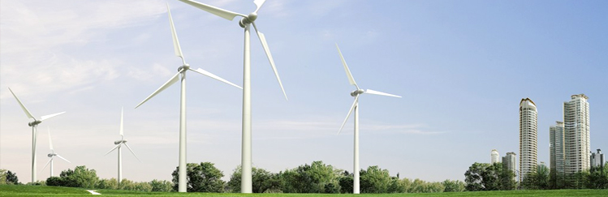

绿色环保
引领清洁能源 创造健康生活 海尔十年践行绿色环保
2015年 6月5日，是第44个世界环境日，也是中国《新环保法》实施后的首个“环境日”。随着社会各界对于环境问题认识的不断深入，环境保护工作已成为各行各业的必修之课，而今年环境日中国将主题定位“践行绿色生活”，更是体现了环境保护与大众生活的息息相关。作为国内首家发布环境报告书的企业，海尔始终坚持“绿色发展”战略，自2006年已持续发布了十年环境报告书，并为国家环保标准《企业环境报告书编制导则》（HJ617-2011）...
80米烟囱主动提前“退休”
为深入贯彻落实“十二五”节能减排约束性目标，海尔于2013年9月12日清晨6时，在青岛市海尔工业园内定向爆破了一根80米高的老烟囱。该烟囱建于1993年，距今已有20年历史。据推算，该烟囱爆破后每年可减少56.76吨二氧化硫排放量，这相当于9604亩森林一年内吸收的有害气体的数量。
积极组织义务植树
2012年3月12日，海尔“青年志愿者”团队从海尔园出发，到百果山进行义务植树活动。
2012“地球一小时”海尔全球在行动
2012年3月31日，海尔举办的“海尔.地球一小时”公益汇演活动在全球多座城市跨时区依次拉开序幕。这是继去年之后海尔第二次参与WWF（世界自然基金会）发起的“地球一小时”活动，本次公益汇演活动不但通过海尔的全球品牌影响力覆盖多个大洲，且与由海尔发起的“地球一小时••••••••••••灵感DJ频道”网络主题活动相结合，成为有史以来家电品牌覆盖面最广、影响力最大的公益盛事。
灵感演绎公益
3月31日晚八点...